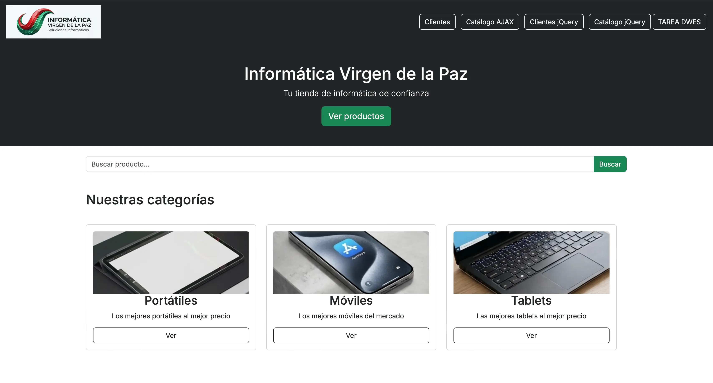
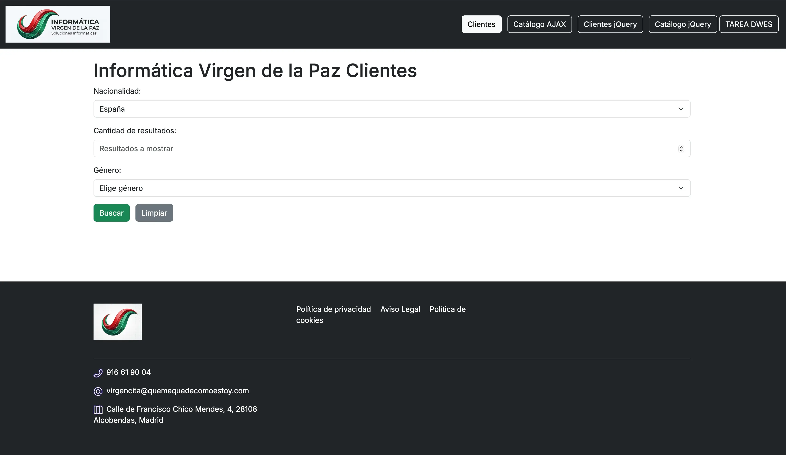
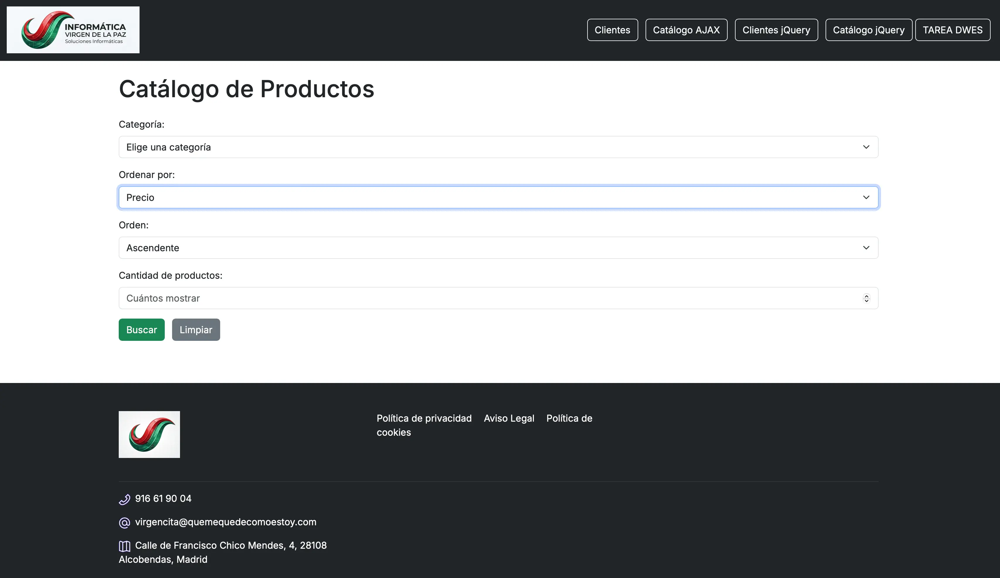
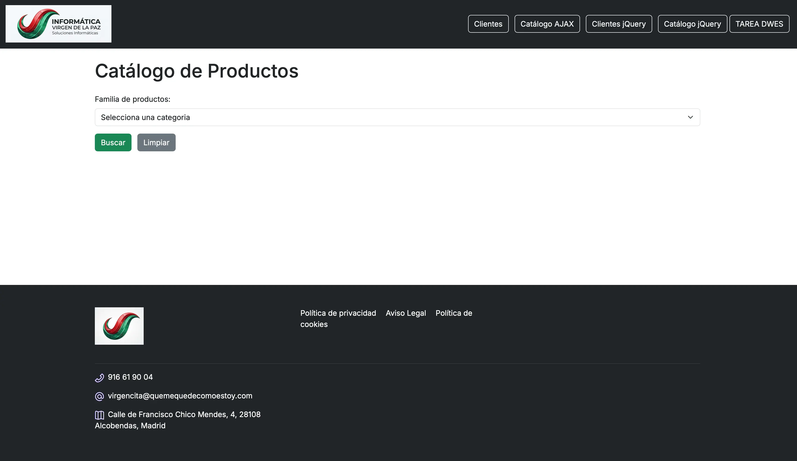
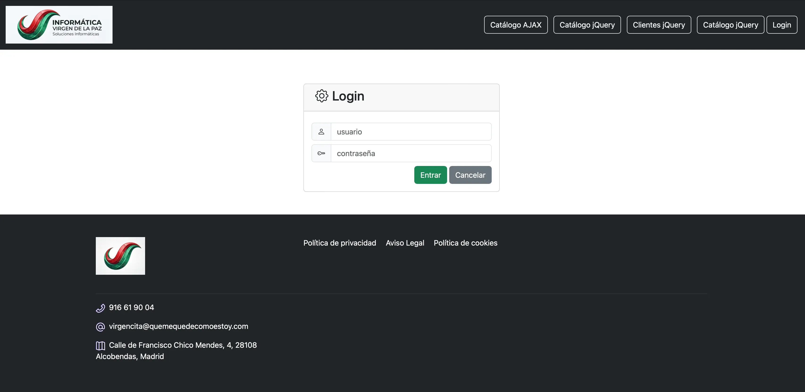

Tienda informática
Proyecto que desarrollé en la parte final de curso en la que entregré la parte cliente y la parte servidor.





- Resumen
- Cree una tienda de informática que une dos asignaturas del FP de DAW: la parte de cliente (catálogo, clientes y buscador con AJAX) y la parte de servidor (login, productos y valoraciones con PHP y MySQL).
- El reto
- La tarea de cliente pedía cuatro páginas que consultaran APIs públicas: dos en XML y dos en JSON, cada una con JavaScript puro y con jQuery. Yo decidí darles forma de tienda: una portada con categorías que abren el catálogo ya filtrado, un buscador en vivo y opciones para ordenar y limitar los resultados. Después la uní con la tarea de servidor: un login, los productos de la base de datos y un sistema de valoraciones con estrellas.
- Stack
-
- HTML5 Y CSS3
- Bootstrap
- JavaScript con jQuery y AJAX
- XML
- JSON
- PHP 8
- Composer
- BladeOne para las vistas
- MySQL
- Una decisión
-
Las valoraciones se guardan sin recargar la página. Al votar, jQuery envía el voto a votos.php, que comprueba que no hayas votado ya ese producto, lo guarda y devuelve la nueva media en JSON. La tabla se actualiza al momento con las estrellas nuevas, incluidas las medias estrellas.
- Lo que más me costó
- AJAX y jQuery. En su momento conseguí que funcionara, pero no entendía del todo lo que pasaba entre la petición y la respuesta. Lo entendí meses después, al construir un buscador de ópticas con fetch para mi laboratorio. Ahí vi que era lo mismo con otra sintaxis: pedir, esperar y pintar.
- Lo que hoy haría distinto
-
- Las contraseñas se guardan con sha256 sin sal. Hoy usaría password_hash y password_verify.
- El servidor no comprueba que el voto esté entre 1 y 5: se fía del formulario. Todo lo que llega del navegador hay que validarlo en el servidor.
- El catálogo pinta los datos de la API con innerHTML. Hoy crearía los elementos con createElement y textContent.
- La tabla de productos hace dos consultas por producto. Con un GROUP BY bastaría una sola.